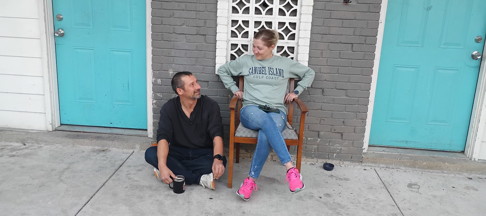

Some roads change everything.
A year ago, neither of us could have imagined where life was about to take us.
From that unexpected beginning in Ennis to the days we spent together in Dallas, the miles between Frost and Sweetwater, and eventually finding a little place to call our own, what a journey it's been.
There have been adventures, laughter, unforgettable moments, and a few turns neither of us saw coming. Some memories still make me smile just thinking about them.
And somewhere along the way, certain songs started reminding me of you. Sometimes it was the melody, sometimes the words, and sometimes just a feeling I couldn't quite explain.
So I started collecting them. What began as a few songs became something more — a way to revisit our first year together, one memory at a time.
I hope that as you listen, you'll remember the moments that made us laugh, the places we've been, and the little things that made our time together special. And maybe you'll discover a few things I've wanted to tell you along the way.
So get comfortable, enjoy the music, and let me take you on a little trip down memory lane.
Welcome home, Stephanie. ♥
With love, and a whole lot of memories.

♫ Listen to our songs
Sixteen songs. Seven chapters. One story. ♥♥ A private letter for Stephanie ↗
A little something just for you. Opens in a new tab.

Here's to brighter mornings.
Stephanie, I don't know exactly where our road leads from here. But I'm grateful it brought me to you. I'm working to become someone who loves with more honesty, patience, and understanding.
Whatever tomorrow brings, I hope it brings you peace, happiness, and a life you're proud of. And I hope we get to share some of that road together.
And today, before anything else, I just want to say: I’m glad you’re coming home. I hope the ride is peaceful, that you can rest, and that you feel proud of the work you’ve done for yourself. You deserve a gentle beginning to this next chapter, wherever it leads.
Welcome home, Stephanie. ♥
With all my love.” I think “With all my love, Jason ♥